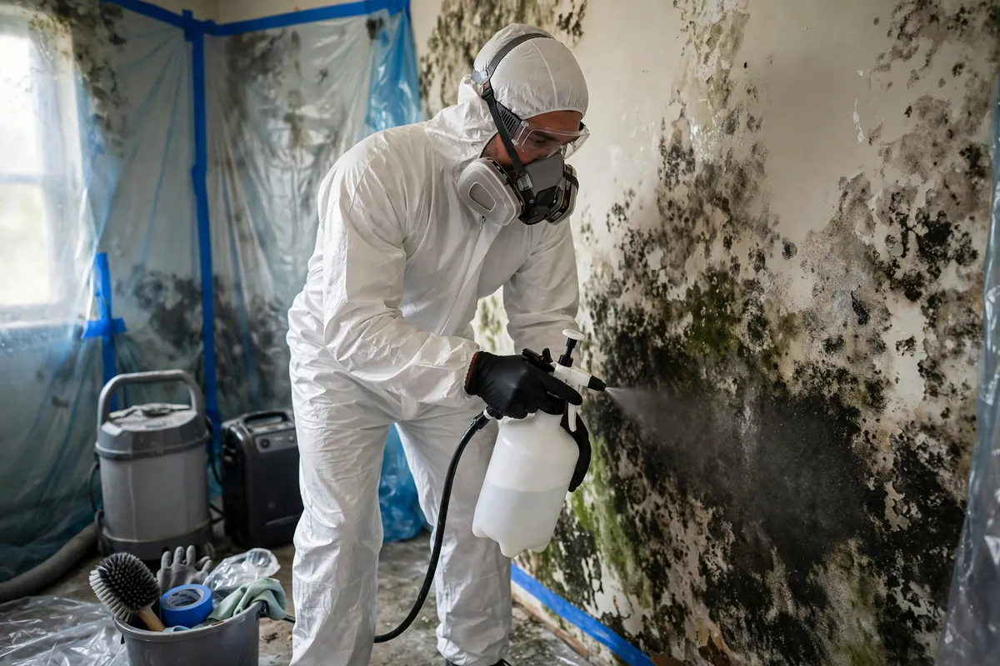

Mold Remediation Support in Hollywood, FL
Mold is what happens when moisture overstays its welcome. In Hollywood's climate, damp drywall or insulation can start colonizing within a day or two of a water event — often inside the wall where you can't see it. Mold remediation support means two things done in the right order: eliminating the moisture that feeds growth, then removing the growth itself through containment, careful material removal, HEPA-filtered cleanup, and antimicrobial treatment where appropriate.

Understanding Mold Remediation Support in Hollywood
Every water loss is a potential mold job if drying is slow or incomplete. Porous materials are the vulnerable ones — drywall paper, insulation, carpet backing, and wood all offer food and shelter once they stay damp. Growth often starts behind baseboards, inside wall cavities, or under flooring, announcing itself later as a musty odor or discoloration. By the time it's visible, the colony is usually larger than it looks.
South Florida's warmth and humidity compress the timeline: what might take a week to colonize elsewhere can start in 24 to 48 hours here. That urgency shapes the whole approach — the moisture source gets fixed first, because remediation without drying is temporary. Containment keeps spores from spreading to clean areas during removal, and materials too porous to clean reliably, like saturated drywall and insulation, are removed rather than treated and hoped over.
How We Handle the Job
Work begins by confirming the moisture source is stopped and mapping how far dampness extends — mold follows water, so the wet boundary defines the work area. The affected zone is contained to prevent spread, then unsalvageable porous materials are removed: soft drywall, compressed insulation, contaminated backing. Remaining surfaces get HEPA vacuuming and antimicrobial treatment, and the entire area is dried with air movers and dehumidification until meter readings verify it. Nothing is declared finished while moisture remains.
We tell you what was found, what was removed, and what the final readings were — no vague reassurances. When the situation calls for broader work, related services such as emergency water extraction, structural drying, or flood cleanup may be part of the same job, sequenced so drying always comes before final cleanup.
Local Response and Insurance Support
Searching for mold remediation support near me usually means you need help without delay. We answer emergency calls around the clock. Documentation — photos and moisture readings — supports conversations with your insurance carrier when the loss is sudden and accidental. We do not decide coverage; we provide clear technical information about the work performed.
When to Call
Call if you have active water, wet materials that are not drying, odors after a leak, or a backup that may involve contaminated water. Early action in Hollywood’s climate is almost always less disruptive than waiting. For neighborhood-specific service, see our service areas. For the full list of capabilities, visit all services.
Frequently Asked Questions
Can't I just bleach the mold I can see?
Bleach lightens surface staining but doesn't reach growth inside porous materials, and it does nothing about the moisture feeding it. The mold returns — usually worse — because the conditions never changed.
Do you test to identify the type of mold?
Our work centers on moisture control, containment, and removal. If you want laboratory identification of mold species, an independent testing lab handles that separately; it isn't required to do the cleanup correctly.
How do you stop mold from spreading while you work?
The work area is contained with barriers before anything is disturbed, materials are handled so they don't shed spores into clean rooms, and HEPA-filtered vacuuming captures what removal stirs up.
Will the mold come back after remediation?
Not if the moisture source is fixed and every material verifies dry — recurrence is almost always a moisture problem, not a cleaning problem. That's why final meter readings matter more than how things look.